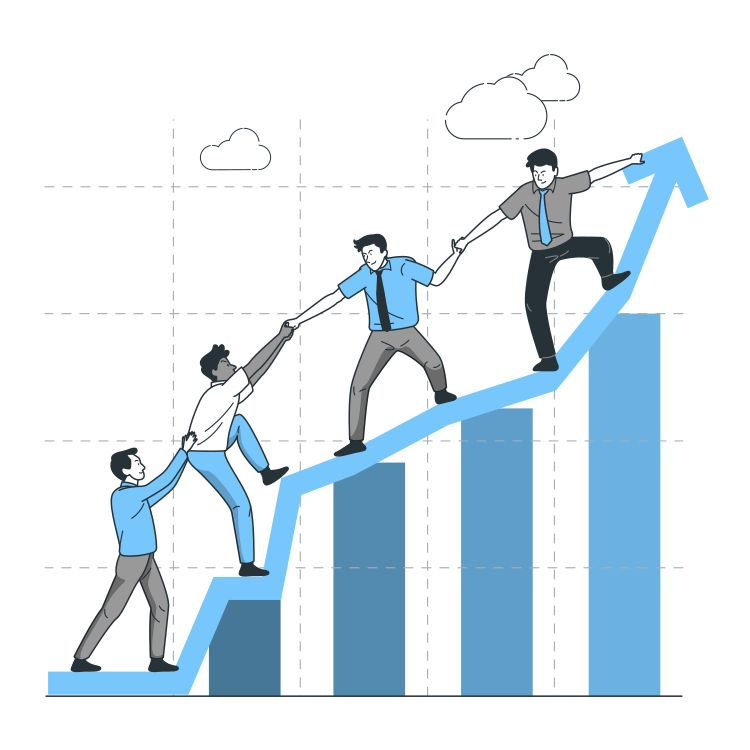
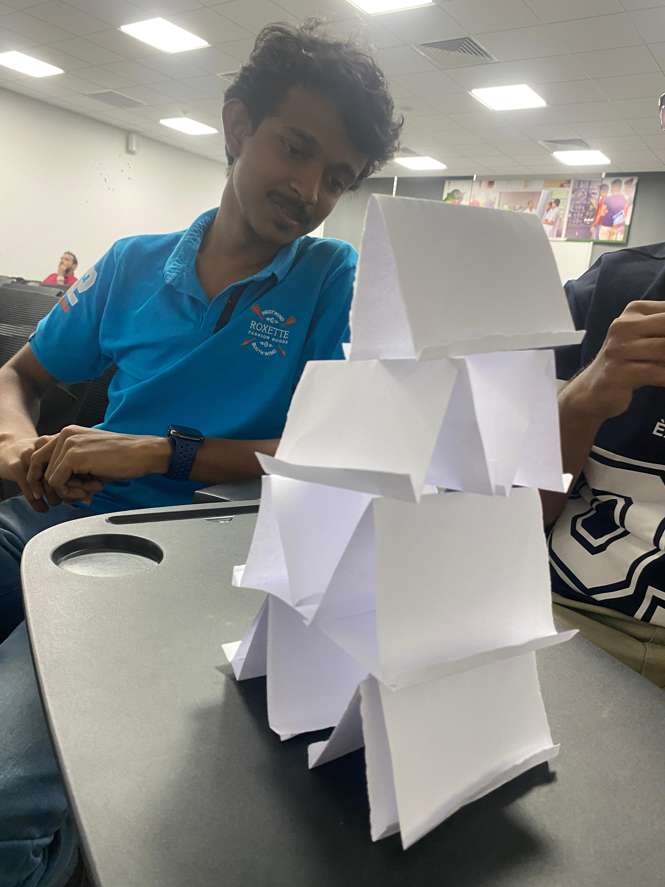
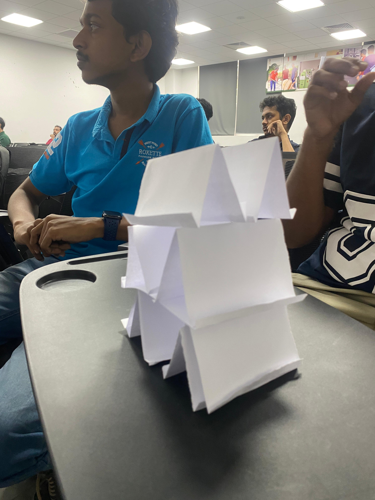

PROFESSIONAL SKILLS / SESSION 07
Team Leadership Skills
Supporting people and working towards shared goals.

Overview
Supporting people and working towards shared goals.
Learning outcomes
- Understand team development and leadership.
- Apply decision-making and problem-solving skills.
- Respect different opinions and support team members.
Activities
A4 Paper Structure Challenge
Our batch was divided into groups, and each group appointed a team leader. We were challenged to build the tallest and strongest possible structure using A4 sheets of paper.
The activity gave us an opportunity to practise teamwork, leadership, decision-making, and problem-solving while working towards a shared goal.
My reflection
During this session, I learned about team development, leadership, decision-making, and problem-solving. It helped me understand the importance of respecting different opinions, supporting team members, and working together to achieve common goals. These skills are useful in group projects and professional environments.
Teamwork in practice



